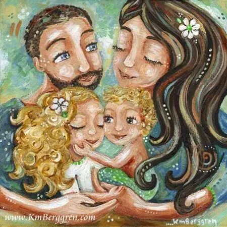
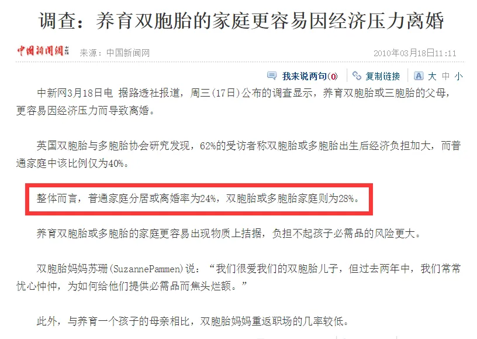
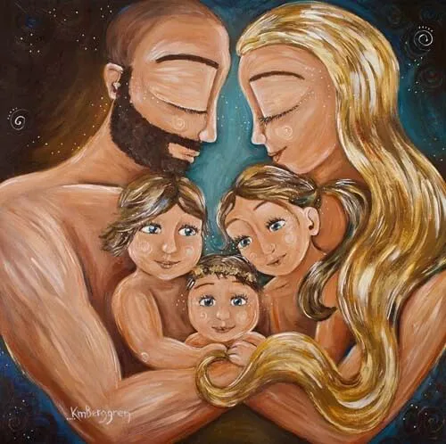
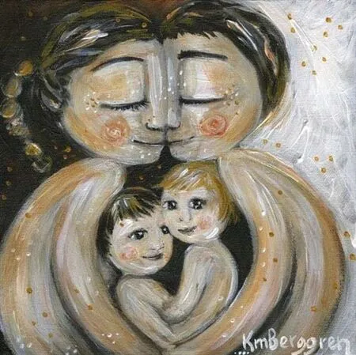

孖仔帮
公众号ID：twinsbang
关注
文|圆圈妈
网图|侵删
“妈妈，你为什么老是凶你的老公？”圈圈洗完澡出来板着脸，很气愤地问我。
我愣了半天，赶紧脑补了下，好像刚才确实有点凶，因为队友给俩娃洗澡又忘记拿毛巾了，要我帮忙递下，可是我这边刚好抽不开身，就不耐烦地吼了一声。
我哑口无言，不知道怎么解释，我很想告诉他，那是我和他爸爸一贯来的沟通方式，只是嗓门大而已，不是在凶他也不是在吵架，但突然间，连我自己都没有底气了。
似乎一直以来，我习惯了遇事不顺就会找队友大呼小叫发泄一通，有时候连我自己都觉得自己好变态，但却总是无法控制。
我一直致力于做个“零吼叫”的妈妈，努力克制坚决不吼娃，但却忘记了，我其实最应该做一个温柔的妻子。
今天的推文来聊聊双胞胎家庭的夫妻关系，当了双胞胎爸爸妈妈后，你们的爱还在吗？
【1】现状
双胞胎出生后，夫妻关系岌岌可危？
《法国妈妈育儿经》一书中提到：家有双胞胎的父母，一般离婚率都很高。书中的女主角与她的老公西蒙，二胎来了双胞胎，也时常因为养育双胞胎的那些烦人琐事而吵架，互怼！
▲翻到10年前的一则新闻报道▲
还有，在我们的双胞胎社群，也经常能看到妈妈们的吐槽：“家有猪队友好累啊，帮不上忙就算了，还帮倒忙，兼职“拆台”专家，真想离婚，一人带俩娃还更自在些。”
一个家庭，孩子增多了，并不是多添一双碗筷那么简单，两个小生命同时降临给整个家庭体系带来的变化，说是毁灭性的，一点都不为过。
有娃之前，小两口的二人世界，处于“两人饱，全家不饿”的小资时代，有俩娃之后，直接倒退到盘古开天辟地，每一天都是混沌的！
首先是经济上的开支，与日俱增
有娃之前，偶尔来一次烛光晚餐；有俩娃之后，超过18块的外卖都不敢点。
有娃之前，经常开车去兜风，哪里嗨哪里去；有俩娃之后，车在车库吃灰，哪里有床哪里睡。
有娃之前，还掉信用卡还有点小钱去网红打卡点浪漫下；有俩娃之后，信用卡还没还上，奶粉尿不湿已经告急了。
其次是生活质量大大下降！
有娃之前，两人一起赖床，想几点睡就几点睡；有俩娃之后，睡觉都奢侈，根本就没机会合眼，长期缺觉，天天铲屎倒尿接屁，每天都一大堆破事。
有娃之前，两人的话题既文艺又装逼，聊八卦明星，说天文地理，论行业动态；有俩娃之后，开口闭口就是娃都睡了没？轮到哪个娃喝母乳了？为什么一个哭另外一个也在哭，这不刚换的尿布嘛，怎么又要换？
有娃之前，很注重仪式感，儿童节都能收到鲜花和棒棒糖；有俩娃之后，能收到西蓝花已经是仁至义尽了！
有娃之前，经常倚斜阳互诉衷肠；有俩娃之后，要么懒得说话，要么互相抱怨：你爸为什么上厕所不冲水，你妈又追着喂饭了，你就不能…
总之，生了对双胞胎，毫无幸福感可言，毫无做夫妻的感觉，都不知道生孩子来干嘛，而且还生了两个。
他再也不是曾经的俊俏小鲜肉，你也不是当年的迷人小姐姐，取而代之的是，他是你眼中的油腻大叔，你成了他眼中的欧巴桑。
在两个孩子的屎尿屁双重浸泡下，周而复始，日复一日，更加速了彼此内心的不满与愤懑，长此以往，夫妻关系跌入冰点，甚至名存实亡！
双胞胎出生率逐年增多导致双胞胎家庭的离婚率高，由此可见，现在的离婚率那么高，原来都是越来越多的双胞胎家庭拖后腿了！
然而，真的是这样吗？
【2】
我不同意
虽然以上说的都是事实！
如果是原本就充满危机的婚姻，孩子的到来不但解决不了问题，还会因为孩子的出生引爆很多矛盾，加快婚姻灭亡；
如果是原本就相爱和谐的婚姻，孩子的到来会让两人的感情更加升华，对于这样的夫妻而言，孩子才是爱情的结晶。
摘自晚情聊育儿（wanqingliaoyuer）
于我而言，圆圈两兄弟的到来让我和队友的感情更铁了，我们在这场养育双胞胎的育儿大战中，不仅升华了夫妻情，还培养出坚不可摧的兄弟情，彼此更有默契了。
有时候，我们甚至不用说话，一个眼神示意，一个动作示范，就能知道对方想要什么。
这些默契不是与生俱来的， 而是从你奶娃，我拍嗝，你睡觉，我站岗，你哄娃，我煮饭，你抱俩娃，我拎行李….这些养娃小细节中磨炼出来的。
我一直在想，若是我们只有一个孩子，我会轻松到飞起来，我只管生，队友负责养，但是，这一口气来了两个孩子，每个人都不能置身度外，都不得不轮流照看，分工合作。
我们也时常会在养娃过程中发生矛盾和分歧，特别是圆圈刚出生的头几个月，被一大推琐事折磨着，经常因为一点小事吵架，冷战...
他抱怨我冲奶粉没有摇匀，换尿布很暴力；我也抱怨他冲奶粉要晃那么久，还要注意手法，抱娃睡觉还有那么多讲究，娃流口水了拿纸巾擦掉就行了，非要用纯棉口水巾擦….
可是我们并没有因此而互相仇视对方，除了得益于我们的感情基础，更重要的是，我们彼此都清楚，恰恰是有了两娃在，每天都有惊心动魄的事情上演，每天都要打起十二万分精神应对，我们才不至于在平淡的婚姻中丢掉了彼此，反而更加记得我们当初的那些山盟海誓，记得我们不顾全村人反对也要裸婚在一起的决心。
他们哥俩就是上帝派来考验我们的使者，看似在棒打鸳鸯，实则是给我们平淡的二人世界来点意想不到的惊喜和惊吓，给我们的夫妻生活加了两道菜，酸甜苦辣，个中滋味，而我们却能美滋滋地狼吞虎咽，吃个精光。
第一次听到他们开口喊“爸爸”“妈妈”，我们开心地抱成一团，激动到尖叫；
第一次送他们入园，我们互相击掌：欧耶，万兽归笼了；
三更半夜抱着发高烧的他们去挂急诊，我们在寒风中互相依靠着等待叫号，互相安慰着：“没事，小感冒而已”；
当事业不顺，工作坐冷板凳时，我们互相鼓励：没事，有我在呢！”
【03】
在婚姻里
最重要的心态就是感恩的心
法国著名夜间新闻主持人劳伦斯·费拉里说：“在夫妻之间，在婚姻里，最重要的心态就是怀有一颗感恩的心。”
的确如此，我不是超人妈妈，一拖二我肯定办不到，很多时候，很多事情，都是有队友在忙里忙外，我才能熬过来！
岁月静好，只是因为有人在替你负重前行。
我对这句话的感触特别深刻。
双胞胎的到来加深了我对队友的爱和依赖，还有一颗感恩的心！以后的事情，我不知道会怎样，也许夫妻之爱会淡去变成亲人，也许会发生什么变故分道扬镳，但这颗感恩的心却会始终不变。
现在，只想活在当下，珍惜眼前人！
当年我们裸婚时，啥嫁妆都没有，我爸象征性地送了我一句话：婚姻要好好经营！这句烂大街的心灵鸡汤，我当时听了左耳进右耳出。
经历过这场养育双胞胎的大战后，方知这句话背后的意味深长，而我更想补充的是，婚姻要好好经营，孩子就是不二法宝，善于平衡各方关系，才能长长久久，幸福美满。
孩子从来不是拆散专家，导致婚姻解体的是我们成年人不成熟的样子，不沟通，不交流，不理解，不信任，不宽容。
当我们对对方有埋怨时，不妨坦诚相见，说出各自的感受，不要让对方猜，及时沟通，互相包容，理解万岁。
最重要的是，别只顾着孩子，而忽略了彼此，给双胞胎孩子们最好的爱，就是爸爸爱妈妈，妈妈爱爸爸，让孩子们学会爱的能力，同时也会享受被爱的幸福。
-END-
今日互动话题
#双胞胎来了，你们的爱还在吗？#
评论区聊一聊呗！
微信公众号：孖仔帮
ID : twinsbang
专注双胞胎孕育，养育，教育经验分享
扫码关注我们
点一下你会更好看耶




